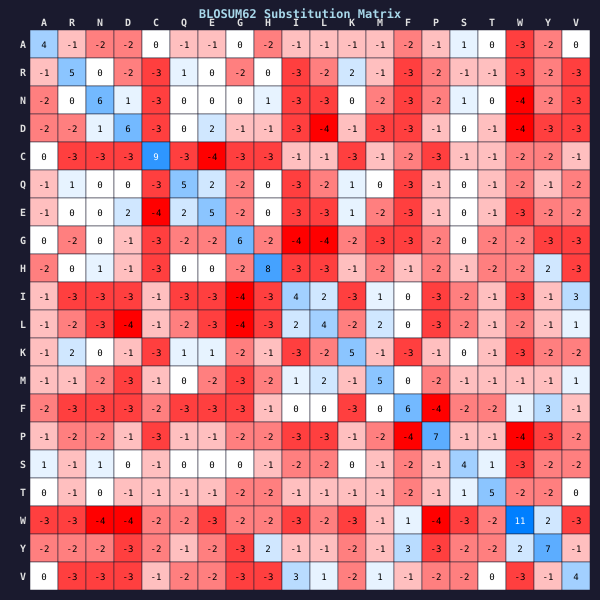

Machine Learning Engineer
Lawrence Berkeley National Laboratory
Machine learning work focused on scientific workflows, research tooling, and infrastructure that keeps experiments moving cleanly.
Lawrence Berkeley National Laboratory
Machine learning work focused on scientific workflows, research tooling, and infrastructure that keeps experiments moving cleanly.
Martin Computational Speciation Lab
Reduced simulation latency, parallelized Julia workflows, and built telemetry for large-scale evolutionary experiments.
Imagine Games Network
Built feature selection and ingestion systems for production AI workflows.


